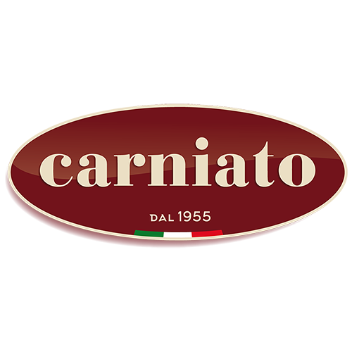

Stage 1ère Année de BTS SIOStage de première année réalisé au sein de l'entreprise Carniato, spécialiste de la distribution de vins, de produits alimentaires italiens et d'épicerie fine. Immersion dans le monde professionnel informatique, découverte du fonctionnement d'une entreprise, mise en pratique des compétences en développement web et prise de conscience des enjeux de communication et du travail en équipe.
Période : 1ère Année de BTS SIO
Stage de 12 jours (84h) réalisé au Groupement de Gendarmerie - Evry (91) dans le cadre de la phase 2 du SNU (Cadets de la Gendarmerie). Découverte approfondie des métiers de l'institution, acquisition de valeurs de discipline, de rigueur et d'engagement citoyen.
Période : 2023-2024 (12 jours - 84h)
Étudiante en Développement Web — BTS SIO SLAM
© 2025, Tous droits réservés